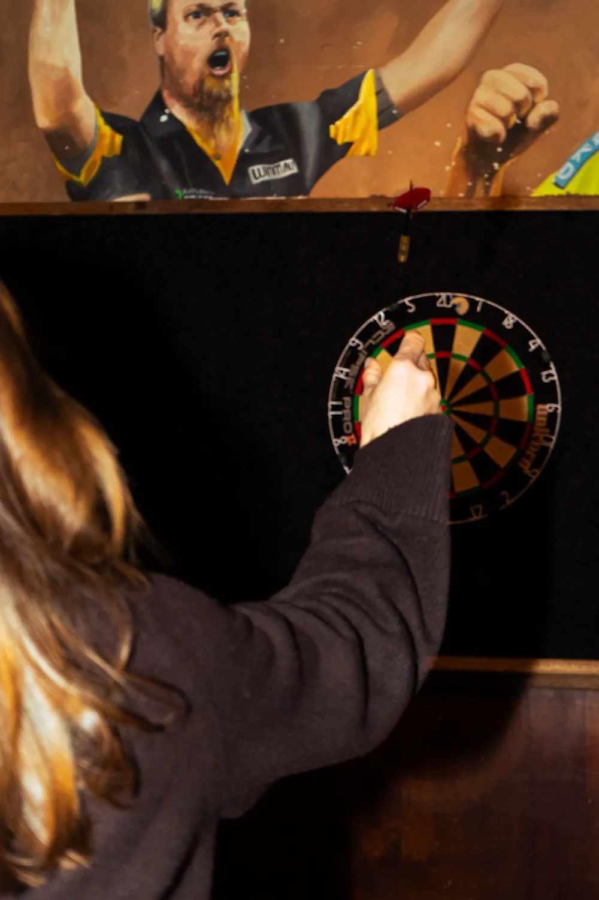
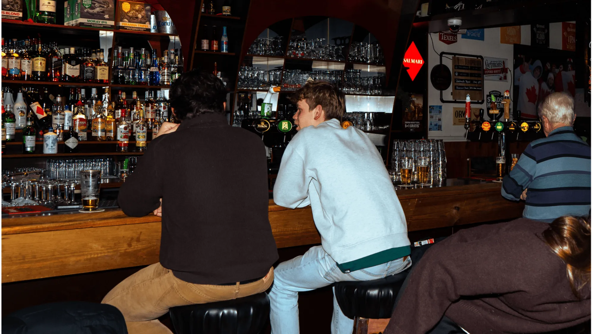
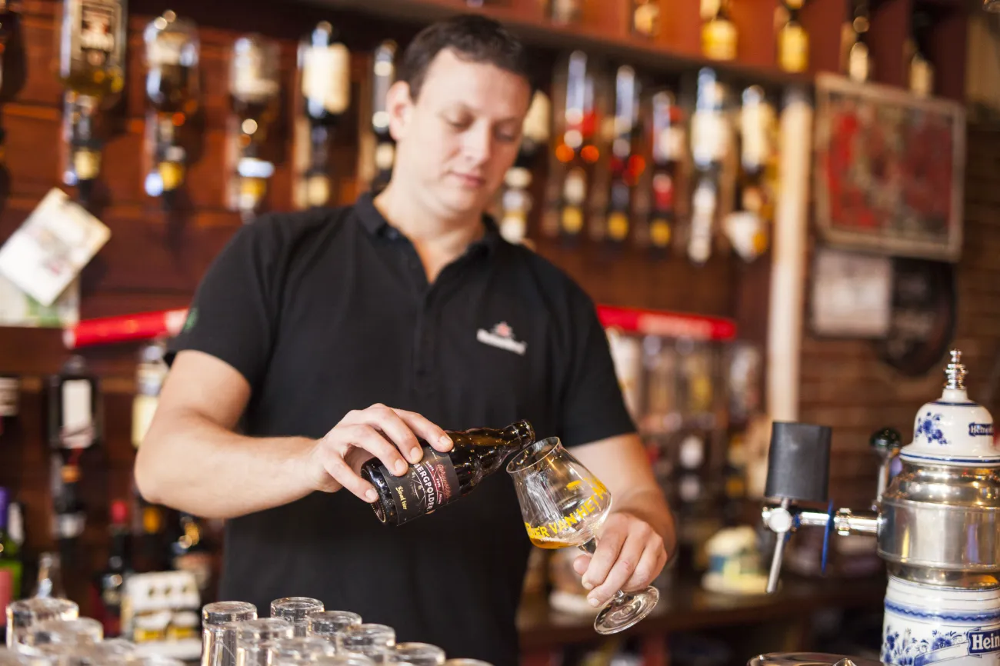
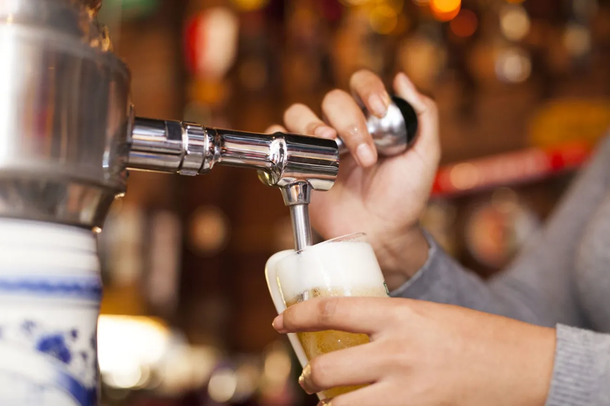
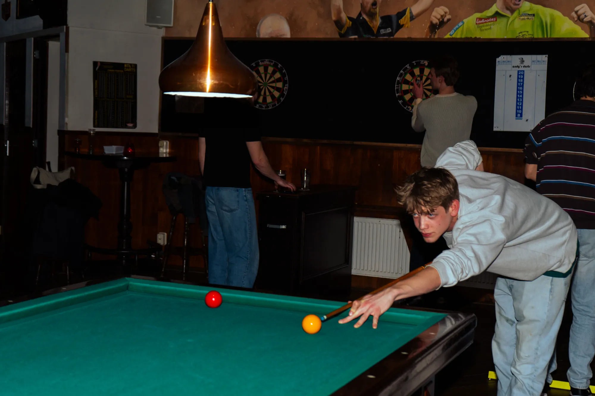
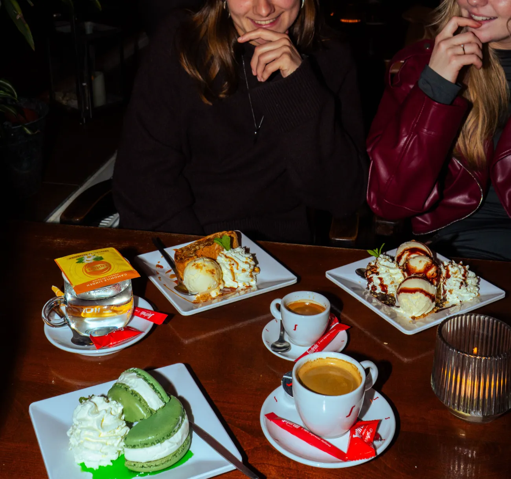
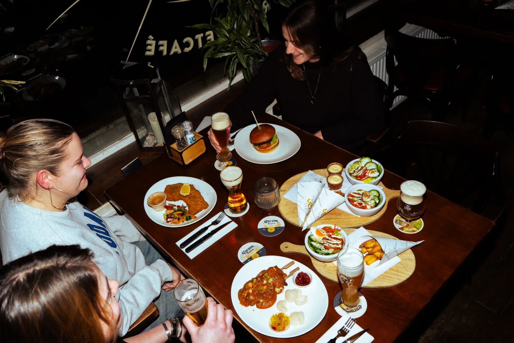

Darten
Gooi een pijltje tussen twee biertjes door, gewoon in het café.

Bergselaan 340-B, Rotterdam
Al sinds 1933 een begrip in de buurt. Voor een borrel, een snelle hap of een heerlijk diner, met Rotterdamse nuchterheid.
Eetcafé Bergpolder is al sinds 1933 een begrip in de Rotterdamse buurt Bergpolder. Gezelligheid, een lekker hapje eten en Rotterdamse nuchterheid: dat vind je hier.
Het is de ideale plek voor een gezellige borrel, een snelle hap of een heerlijk diner. We serveren de gerechten die je van een eetcafé mag verwachten, maar dan in een modern Bergpolder-jasje.



Gooi een pijltje tussen twee biertjes door, gewoon in het café.

Een gezellig potje biljarten of poolen in Rotterdam? Je hebt de keuze uit twee biljarttafels en één pooltafel.
Van welke sport je ook houdt: we zenden regelmatig wedstrijden en grote sportevenementen uit op diverse grote schermen en tv's in het café. Met onze uitgebreide bierselectie, lekker eten en veel ruimte geniet je van elke wedstrijd die live wordt uitgezonden.

Groot of juist klein, uitbundig of liever ingetogen. Een verjaardag of je huwelijksfeest, met een live band of een muziekje op de achtergrond, met een hapje of een uitgebreid buffet: bij Eetcafé Bergpolder kan het allemaal.
Eerst even komen kijken? Geen probleem. Kom de sfeer eens proeven en verbaas je over de vele mogelijkheden, natuurlijk onder het genot van een bak koffie.
Bel over je feest: 010 465 64 79Zie jij jezelf al werken in een gezellig café in Bergpolder, waar altijd wat te doen is? We staan altijd open voor nieuwe collega's, in de keuken en in de bediening. Heb je ervaring of wil je het graag leren? Je bent van harte welkom om te reageren.
Lijkt het je wat? Bel ons gerust, en wie weet drinken we snel een kop koffie samen.
Bel 010 465 64 79
Bergselaan 340-B
3038 CP Rotterdam
010 465 64 79
info@eetcafebergpolder.nl
Reserveren gaat telefonisch.
| Maandag | gesloten |
|---|---|
| Dinsdag | 16:00 – 01:00 |
| Woensdag | 16:00 – 01:00 |
| Donderdag | 16:00 – 01:00 |
| Vrijdag | 16:00 – 02:00 |
| Zaterdag | 16:00 – 02:00 |
| Zondag | 12:00 – 01:00 |